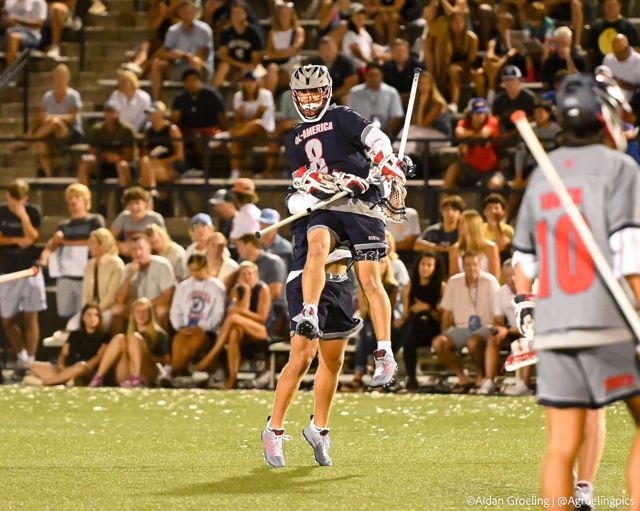
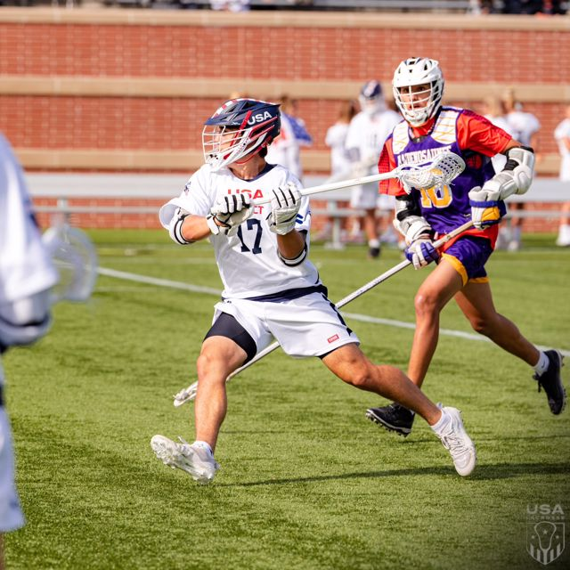
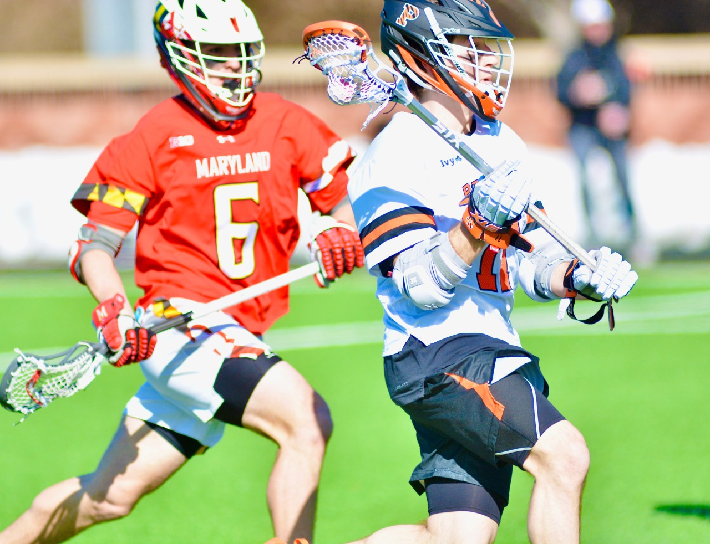

About
Thomas Gravino is a short stick defensive midfielder for the Maryland Terrapins. Known for his relentless grit and unmatched work ethic, he played in the national championship at Gillette Stadium and is a core part of the U20 U.S. Men's Lacrosse Team.
Highlights



"He’s one of the hardest workers on the field. Grit, drive, and raw talent—Thomas Gravino is the future of American lacrosse."